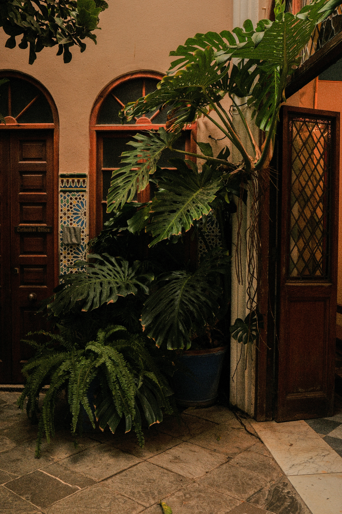
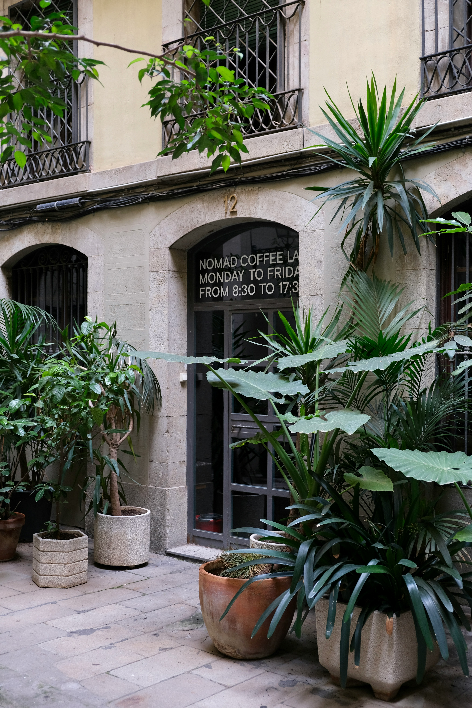
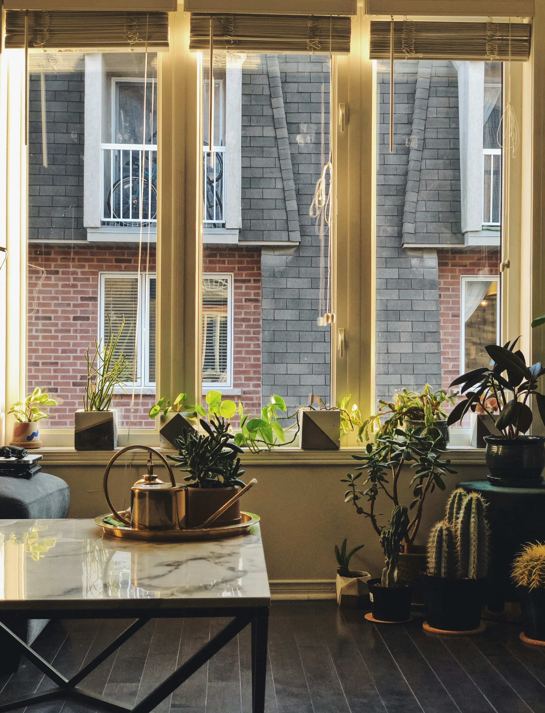
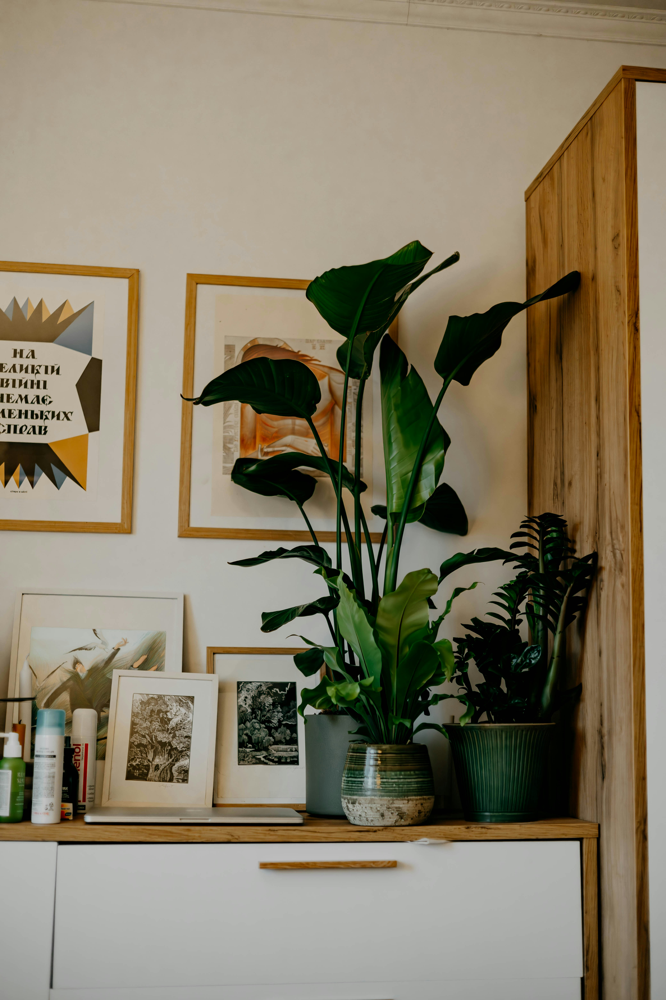

Monstera deliciosa · peak growing season underwayFicus lyrata · repotting window open until SeptemberCoffea arabica · new care guide publishedCalathea orbifolia · humidity guide updatedPothos aureus · propagation season beginsMonstera deliciosa · peak growing season underwayFicus lyrata · repotting window open until SeptemberCoffea arabica · new care guide publishedCalathea orbifolia · humidity guide updatedPothos aureus · propagation season begins
Coffea arabica thriving in its native Ethiopian highland environment, where altitude and rainfall create ideal conditions.
The Coffee Plant: A Botanical Study
From Ethiopian highlands to your windowsill — understanding Coffea arabica means growing it with intention. Most houseplant guides skip the ecology entirely. We don't.
By The Herbarium Botanists · 8 min read
Featured
"
Understanding a plant's origin is understanding its needs entirely.
— The Herbarium
Also this week
Propagation Season: When to Take Cuttings and How
The summer window for node cuttings is shorter than most guides admit. Here's the science behind timing, rooting hormone, and substrate choice.
Propagation · 6 min read →
Why Your Monstera Won't Fenestrate
Fenestration isn't guaranteed — it's earned. Light intensity, maturity, and root health all play a role. We examine the overlooked factors.
The biology behind overwatering — and how to prevent it definitively.
↗ See More

Light Mastery: Reading Your Home's Zones
Matching plant to position — a room-by-room light analysis guide.
↗ See More

Five Key Tropical Species for Beginners
Low-maintenance, high-reward — the best entry points into tropical plant keeping.
↗ See More
1,200+Plant species documented
400+Care guides published
12kMonthly readers
100%Free to use, always
Care Guides
Watering
Watering Science: The Biology Behind Every Drop
How does water actually move through a plant? From root uptake to stomatal transpiration — the full cycle, explained. Most people water by routine. Botanists water by observation.
"
Water the soil, not the schedule.
Read full guide →
Light

Soil & substrate
Build the Perfect Mix for Any Species
Commercial potting mix is a compromise. A custom substrate — perlite, bark, coco coir in the right ratios — gives each species what its native soil actually provides.
Soil guide →
Opinion
"You Should Take No Action Unwillingly"
Marcus Aurelius on plants? A surprising read. The stoic patience required to care for a slow-growing Ficus or a reluctant-to-bloom orchid teaches more about cultivation than any watering schedule.
The Herbarium explores the science, ecology, and philosophy behind each species — because understanding a plant means growing it well.
Story: Indoor
Story Told by the Fiddle-Leaf Fig

Ficus lyrata has become the millennial plant of the decade — but few people actually understand what it wants. It's not dramatic. It's misunderstood. A closer look at its West African forest origins reveals everything.
Indoor · 7 min read →
Story: Seasonal
The Last Day Before Autumn: Repotting Your Collection
Every autumn the same question: is it too late to repot? A crisp, clear night in late September. The plants begin to slow. There's one final window — and knowing when it closes is what separates experienced growers from hopeful ones.
Repotting after the growing season ends stresses the root system just as it needs to conserve energy. Timing, as always, is everything.
Seasonal · 5 min read →
Story: Rare Species
Noise and Thunder at the Hotel of Rare Specimens
Certain growers stockpile variegated Monstera and Philodendron gloriosum like investors. An examination of the rare plant market — its ethics, its economics, and what it means for conservation.
The rarest plants need not be the most expensive. Often, they are simply the least understood.